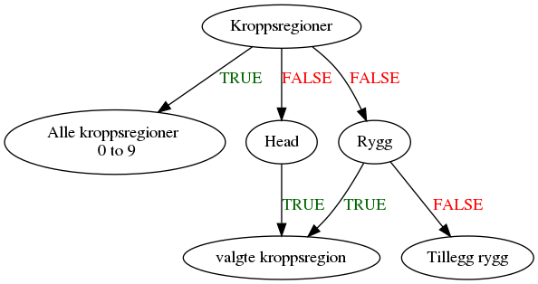

Table of Contents
1 Nyhet
- Resultater kan vises for hele landet, HF, RHF eller sykehusnivå
2 Inledning
3 Filstruktur
4 Hva trenger man for å bruke programmet?
Det kreves at man har installert RStudio. Hvis du jobber på OUS, kan man søker om å få installert programmet fra Sykehuspartner.
5 Hvordan bruker man programmet?
Når RStudio er installert så skal men gjøre følgende:
- Bla bla bla
6 AIS [2/8]
[X]Kode 91000.1 vises som 010000.1 i GUI. Check at datadump har 091000.1 (Ingen som har 09**)[X]kode******.9betyr skadegrad er ukjent[ ]AIS******.1skal bort i analysen for nevne. Lage bare en knapp hvis man vil inkluderer skadegrad 1[ ]Bare høyest skadegradering som teller[ ]ISS > 15 betyr alvorlig skade. For ISS beregning er kvadrat av 3 alvorligste AIS[ ]Beregn eg. vanligste skade ved en vist type ulykke[ ]Lage AIS fane uten ulykketype eller skade mekanismen[ ]Beholder duplikater
7 Analyse ønsker [7/12]
De er basert på diskusjonen med NTR og bestillingsdokument
[X]Dashboard med ISS > 15[X]Død etter 30 dager (som det er nå)[X]Filter for dato Nasjonal - inj_start_date (Traume skjema)[X]Filter for dato Sykehus - ed_arrival_dtg (Akutt skjema)[ ]Antall fordelt på tid - ukedag (virksomhetsdata)[ ]Ulykke og pre-hospital skjema fra sykehus 1 (hosp_serial_num fra Traume Skjema)[X]Filter for Alder (traumeskjema “PatientAge”)[X]Filter for kjønn (traumeskjema “PatientGender” 1=Mann 2=Kvinne)[ ]Filter for penetrerende skade (ulykkeskjema - “inj_penetrating” 0:ikke valgt 1:Ja 2:Nei 3:Ukjent)[ ]Sykehus opphold for liggertid (Intensiv skjema) hvis mulig[ ]Transport forskjellige koder[ ]Forklarer alle analysene i shiny
8 Kommentar/observasjoner
Tilbakemelding til IKT og kommentarer til data uttrekk som kan forbedres eller endres:
- Variablenavn
Valgte ais-koderfra skade datasett bør har variablenavn med bare et ord dvs. uten mellomrom. - Navn for HF og RHF trekkes ikke ut i datadump. Den må gjøres for å ha riktig navn. Akkurat nå lages liste for HF og RHF manuelt.
9 Spørsmål
9.1 Kobling av data
- NTR nummer representerer 1 pasient.
- Traumeskjema har SkjemaGUID som er 1 til 1 mot NTR nummer
- Andre skjema har HovedskjemaGUID som er nøkkelen mot Traumeskjema
9.2 UnitId
- Alle skjemaer har UnitId. Filtering for Sykehus, RHF og HF basert på UnitId til hvert skjema
9.3 hosp_serial_num fra traumeskjema
- hva skal det brukers til?
9.4 Alder
- Alder med -1. Er det riktig tall dvs. spebarn
9.5 Tillegg ais
- Ryggsøyle (spine) tillegguttrekk under Cervicalcolumna, Thoracalcolumna og Lumbalcolumna. Er det bare å telle minst en til begge isolerte skjelettskader og ryggmargsskade? Eller bør skadegradering brukes?
- Tillegg til Lumbalcolumna og Thoracalcolumna for Ryggmargsskade inneholder bare skadegrad 3 til 5 mens Cervicalcolumna har 3 til 6?
9.6 AIS kode for Spine tilleggsuttrekk
10 Hvordan relasjoner gjøres
10.1 Ulykke typer
Hvordan data relasjon er lages..

10.2 Skade
Hvis TRUE valg alle og FALSE valg input kropp
